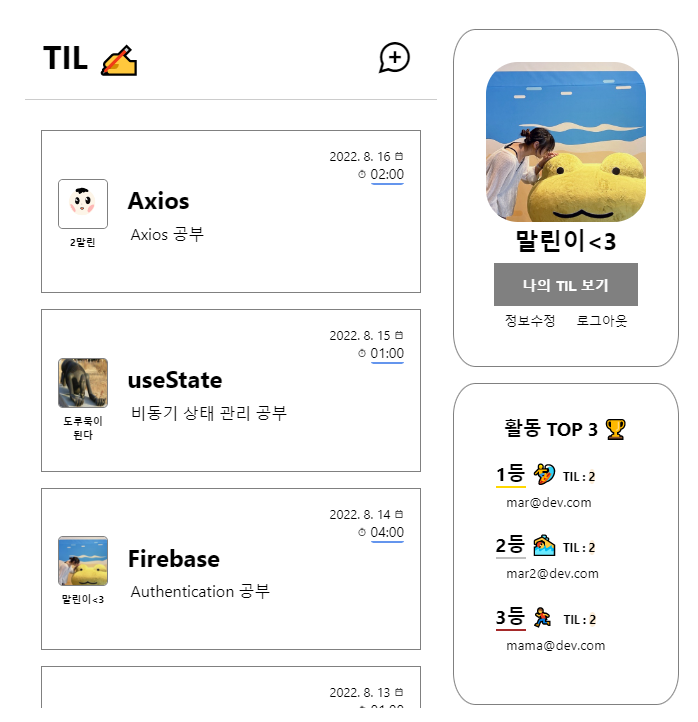

스파르타코딩클럽 "웹개발 종합반 10기"에서 슬랙 등을
활용하여 전체적인 웹을 만들고 배포하는 과정을 경험했습니다.
현업 개발자 튜터님들의 피드백과 코칭을 통하여 학습의 목표와 방향을
정할 수 있었습니다.
서버와 클라이언트의 역할을 배우고 HTML, CSS, Javascript의 기초 문법을 익혔습니다.
또한, JQuery와 Ajax를 다뤘습니다.
Python을 사용해서 MongoDB와 Flask를 다뤘습니다.
개인 프로젝트
2022. 08~ 2022. 09
TIL - 로그인 기반 웹 애플리케이션
TIL을 저장하고 보이는 화면에 로그인 기능을 넣어 사용자에 따른 목록을 보여주는 웹
Firebase Authentication으로 회원가입과 로그인 관리를 했습니다. 회원의 사진은
Firebase Storage에 사용자의 이미지를 업로드하여 얻은 URL 경로를 사용했습니다.
로그인을 하면 자신의 정보와 유저들의 TIL 목록, 전체 유저 랭킹을 확인할 수 있습니다.
최신 TIL부터 내림차순으로 정렬되어 있으며, 유저 사진을 클릭하면 해당 유저의 TIL 목록만
확인할 수 있습니다. 자신의 TIL도 따로 모아볼 수 있고, 추가하기 버튼으로 언제든지 TIL을
작성할 수 있습니다.
Axios를 통해서 Mock API인 TIL 목록을 가져옵니다. Redux에 유저 정보, TIL 목록, 유저 순위의 초깃값을
설정하고 상황에 따라 dispatch로 상태를 갱신합니다.
미끄메라에 대한 10가지 문답을 실행하고
최종 점수와 사용자의 소감을 저장해서 전체 순위와 함께 정보를 보여주는 모바일 전용
웹
App.js를 클래스 형 컴포넌트로 작성함으로 Connect 함수를 사용하여 State 관리를 했습니다.
React Route로 상황에 따라 보이길 원하는 컴포넌트를 지정했습니다.
퀴즈를 시작하기 전에 입력한 사용자의 이름을 Redux에 저장합니다.
OX 퀴즈의 문답을 Redux로 설정하고
Quiz 페이지에 사용자가 진입했을 때,
useSelector로 설정한 문답을 가져와 질문이 하나씩 보이게 했습니다.
React Hook의 Momo와 Ref를 사용해서 O나 X쪽으로 미끄메라 사진을 스와이프 했을 때의 x, y값 위치에 따라
사용자의 답을 Boolean 값으로 useDispatch를 통해 Redux에 저장합니다.
퀴즈 진행률을 화면에 표시했습니다.
퀴즈가 끝나면 사용자의 점수를 계산합니다.
Redux에서 점수 별로 보일 메세지도 가져와서 계산된 점수에 맞게 보여주며,
미끄메라에게 메세지(후기)를 남길 수 있습니다.
useRef로 사용자가 입력한 이름과 메세지, 점수를 Firebase Store에 저장하고,
전체 랭킹에서 볼 수 있게 했습니다. 데이터가 저장되고 불러올 만들 동안 로딩 스피너가
뜨도록 Redux에서 설정했습니다.
앱을 실행하자마자 바로 검색 바가 보이게 하여, 빠르게 원하는 정보를 확인할 수 있는
음식 검색 기능과 음식 종류별 메뉴를 만들어 원하는 종류의 음식들을 모아서 확인 가능하게
만들었습니다.
당시 존재하는 임산부 음식 관련 앱들의 공통점으로는 한국어를 지원하지 않는다는 점이
있었습니다. 그래서 앞으로 한국 시장에서의 임산부 음식 관련 소프트웨어의 선두가 될
수 있다는 점으로 프로젝트를 시작했습니다.
Java언어로 안드로이드 스튜디오를 사용했습니다.
메인 화면에 ListView를 넣은 후, ListView에서 보여질 화면을 만들고
음식 정보를 담기 위한 FoodData.java를 생성했습니다. 그리고 사용자가 정의한
데이터를 보여주기 위한 MyAdapter.java를 생성하여 MainActivity.java에서
ListView와 연결했습니다.
SearchView.setOnCloseListener을 사용해서 검색 바를 사용하지 않았을 때의 기본 값을 설정하고
이 곳의 입력을 프로그램이 주시하게 만들었습니다.
그리고 자연스러운 화면 이동을 위해서 Transition을 사용했습니다.
타 직종 재직 중, 평소 좋아하는 컴퓨터를 깊게 다뤄보고 싶다고 생각하여
소프트웨어 및 하드웨어를 종합적으로 접할 수 있는
정보통신과 진학을 결정했습니다.
2014. 03~ 2017. 02
서울관광고등학교
외식조리과
요리사가 목표였으나, 해외 취업에 관심이 생겨
영어 회화를 목표로 싱가포르 국제공항 면세점에서
Sales Team Member로 1년간 일을 했습니다.

TIL - 로그인 기반 웹
TIL을 저장하고 보이는 웹에 로그인 기능을 넣어 사용자에 따른 목록을 보여줍니다.
Firebase Authentication으로 회원가입과 로그인을 구현하고,
회원의 사진은 Firebase Storage에 사용자의 이미지를 업로드하여 얻은 URL경로를 사용합니다.
Redux의 toolkit을 사용했습니다. Slice로 reducer과 action을 한 번에 만들어, 상태 관리를 하고
Axios로 Mock API인 TIL 목록을 불러와 사용했습니다. 간단한 프로젝트지만 로그인 기능을
넣어보고 그에 따른 데이터만 보이게 만들어볼 수 있는 신선한 경험이었습니다.